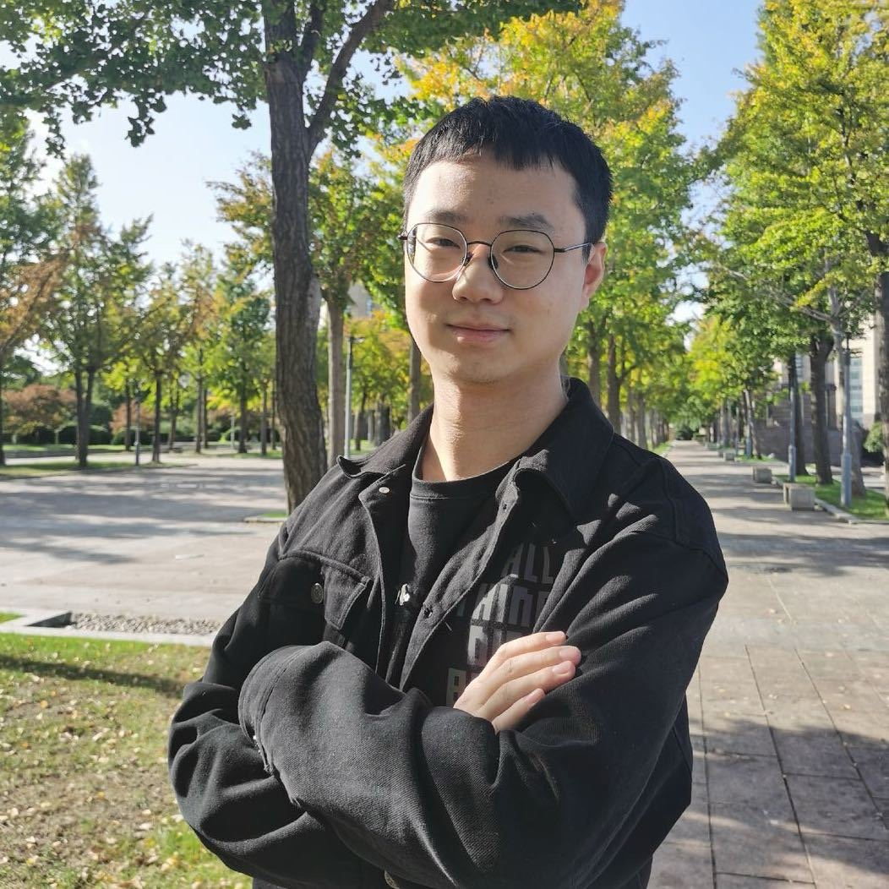

Email | CV/Resume | ORCiD | Research Gate | Google Scholar
Recently, I obtained my Ph.D. in Theoretical Physics at Department of Physics, Fudan University, supervised by Prof. Jiping Huang. I'm interested in both passive and active thermal metamaterials, tapping into the realm of theoretical thermotics, which embraces a spectrum of cutting-edge methodologies, including transformation thermotics, inverse design, principle of energy conservation, and deep learning techniques. Our research focuses on the observation of thermal physics within these metamaterial systems, such as thermal cloaking, thermal topology, and enhanced thermal nonlinearity. Based on these, we are dedicated to uncovering efficient heat transport mechanisms through conduction, convection, and radiation, enabling flexible thermal management.

Employment
National University of Singapore (Singapore, SG) - 新加坡国立大学（新加坡，新加坡）
Research Fellow (Department of Electrical and Computer Engineering), 2026-02 to present
Visiting Postdoc (Department of Electrical and Computer Engineering), 2025-03 to 2026-02
Advisors: Prof. Cheng-Wei Qiu & Prof. Ghim Wei Ho
Education & Honors
Fudan University (Shanghai, CN) - 复旦大学（上海，中国）
PhD (Department of Physics) - 博士学位（物理系）, 2019-09 to 2024-06
Advisor: Prof. Jiping Huang - 导师：黄吉平教授
Awards & Honors:
- [2024] The 15th Academic Star, Fudan University (Top 0.1%)
- [2024] Shanghai Excellent Graduates, Shanghai Municipal Commission of Education
- [2024] Excellent Report of the 13th National Academic Conference on Soft Matter and Life Matter Physics, Chinese Physical Society
- [2023] National Scholarship, Ministry of Education
- [2021] KLA Scholarship, Fudan University
- [2020] Huawei Scholarship, Fudan University
- [2023] Honorable Mention of the PhotonIcs and Electromagnetics Research Symposium (PIERS)
- [2023] First prize of poster of the 10th Five-School-Union, Fudan University
- [2023] Gold Award of poster of the Annual Academic Conference of Dept. Physics, Fudan University
- [2021] First prize of scholarship for outstanding doctoral candidates, Fudan University
- [2021] First prize of poster of the 8th Five-School-Union, Tsinghua University
Stockholm University (Stockholm, SE) - 斯德哥尔摩大学（斯德哥尔摩，瑞典）
Visiting Scholar (Department of Physics) - 访问学者（物理系）, 2023-10 to 2024-01
Advisor: Prof. Emil J. Bergholtz
Donghua University (Shanghai, CN) - 东华大学（上海，中国）
Bachelor (School of Science) - 学士学位（理学院）, 2015-09 to 2019-06
Advisor: Prof. Xiaoliang Tang - 导师：唐晓亮教授
Awards & Honors: (GPA: 4.18/5.00; 1st/40 2018; 1st/40 2017; 1st/50 2016)
- [2019] Shanghai Excellent Graduates, Shanghai Municipal Commission of Education
- [2019] Third prize of the 35th National University Physics Competition, Shanghai Physical Society
- [2018] Student Person of the Year, Donghua University (Top 0.05%)
- [2018] National Scholarship, Ministry of Education
- [2017] National Scholarship, Ministry of Education
- [2017] Youth pacesetter of the May 4th, Donghua University
Cambridge University (Cambridge, UK) - 剑桥大学（剑桥，英国）
Visiting Student - 访问学生, 2018-07 to 2018-08
Awards & Honors:
- [2018] Tianji International Exchange Scholarship (40000 CNY), Donghua University